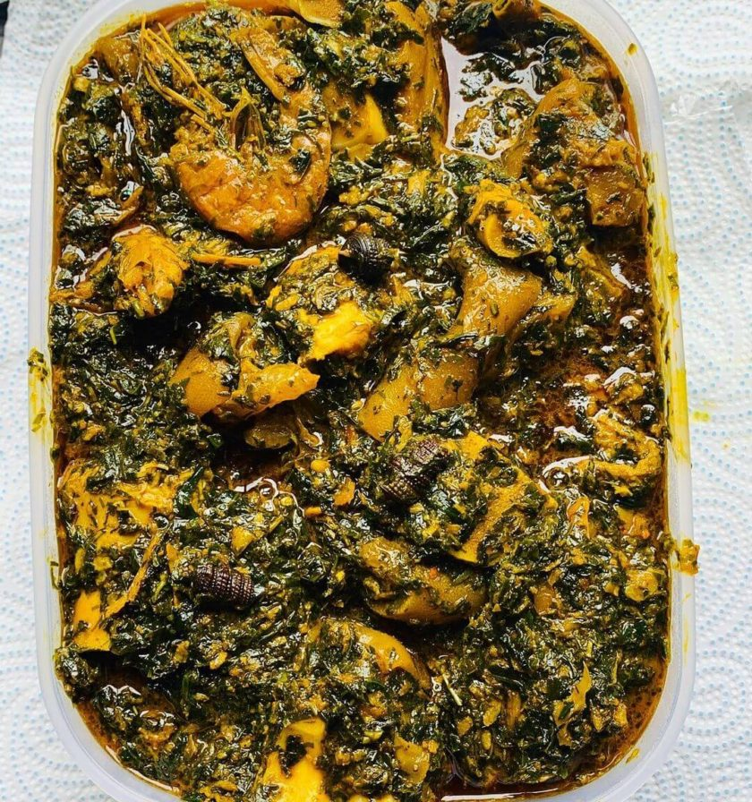

Afang Soup Recipe

Description
Afang Soup is a classic soup from the Efik people of Southern Nigeria prepared from the delicious afang leaves steamed in the most succulent meat options and disturbances in a pool of heat-caressed palm oil. It is the perfect partner to many swallow meals. Made from:
Ingredients
5 cups (500 g) dried okazi leaves
2 to 3 cups (473 to 710 ml) water
1 to 2 pounds (454 to 907 g) beef, cubed
½ medium onion, chopped
2 maggi cubes
>½ pound (227 g) smoked fish
½ cup (73 g) crayfish
2 cups (473 ml) red palm oil
6 cups (1350 g) fresh water leaves, finely chopped
Salt and pepper to taste
Steps
Part 1
Preparing the Okazi leaves
-
Soak the okazi leaves for several minutes. Place 5 cups (500 g) of dried okazi leaves in a large bowl. Cover them with hot water, and allow them to soak for at least 10 minutes to soften them a bit.
- Wash the leaves. After the leaves have soaked for a while, dump out the water. Leave the okazi in the bowl, and run fresh water over them. Use your hands to move the leaves as the water falls over them to clean them thoroughly.
- Drain the leaves completely. Once you have washed the leaves, transfer them to a colander to get rid of all of the water. Shake the colander well to ensure that you remove all of the excess moisture. Set the leaves aside for the moment
Part 2
Boiling the meat
- Combine the water, meat, salt, pepper, maggi, and onion in a pot. Add 2 to 3 cups (473 to 710 ml) of water, 1 to 2 pounds (454 to 907 g) of cubed beef, ½ medium onion that is been chopped, 2 maggi cubes, and some salt and pepper to a large stock pot. Mix the ingredients well to ensure that they are well blended.
- Bring the mixture to a boil. Place the pot with the mixture on the stove, and turn the heat to medium-high. Allow the mixture to come to a boil, which may take 10 to 15 minutes
- Cook the mixture until the beef is tender. Once the mixture comes to a boil, lower the heat to medium. Cover the pot, and allow the mixture to simmer until the meat is extremely tender, which should take approximately 1 to 2 hours.